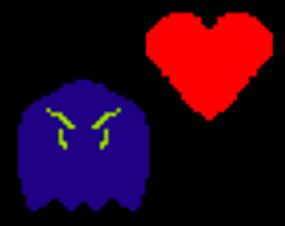

Escaping the Spiral (Scream Secrets Jam)
"Escaping the Spiral" is a surreal horror experience where the player navigates a non-euclidean, seemingly endless hallway with extreme distortions. This was the first, proper horror game I worked on and I'm very happy with how it came out! I'd love to expand on this work with more surreal experiences that use similar procedural rendering techniques.

Shadow Heart Defender (Pirate Jam 15)
This is an unconventional 3D tower defense game that involves manipulating shadows to change your defense. I made this game for a 2 week game jam with the theme "Shadows and Alchemy." It was very fun incorporating the theme and fleshing out the rendering system with raymarched shadows. I'm very happy with the result, and I'd like to return to the idea in the future!
Devil's Dice (Mini Jam 83: Dread)
"Devil's Dice" is a 2D roguelite game I made for a jam. I developed the entire game within a 72 hour time limit. As part of the rules of the game jam, I had to incorporate dice into the project, so I made a dungeon crawler where dice act as a health system. Overall, I am very proud of how this game turned out, and will likely return to work on it in the future!
A Towering Economy (GMTK Game Jam 2024)
"A Towering Econonmy" is a little clicker game with a retro-styled 3D view. Due to scheduling conflicts I ended up with something pretty basic, but it was very fun to build out a procedural rendering system that works entirely in a fragment shader (with no meshes)!
CURSE.or (BRGD 2021)
In this game, you control a mouse cursor that encircles enemies with its trail to score points and extend the time limit. I primarily worked on this project as a programmer.

Sheep Toss (BRGD 2020)
"Sheep Toss" is a rhythm game that involves, as you may guess, tossing sheep! Hitting the correct keys along with the beat determines how far you'll be able to launch the sheep. I led most of the programming work on this project as part of the Brown RISD Game Developers club.

Ball and Chain Parkour (GMTK Game Jam 2021)
This was the first game jam game I worked on! Ball and Chain Parkour is a fast-paced 2D platformer, where the player is attached to heavy ball and chain that they can throw to move around. I gained a lot of experience working under both time and design constraints (the game jam's theme was "joined together" and had a 48 hour time limit).
Mosquito Graffiti (MashUp Game Jam 2)
"Mosquito Graffiti" is the second game jam game I worked on. The theme for te 72-hour game jam was "unconventional means," so my concept for this game was trying to paint graffiti by swatting mosquitos against a wall. Although I did not polish the game as much as I would have liked, I had fun trying out exploring this humorous idea for a game!